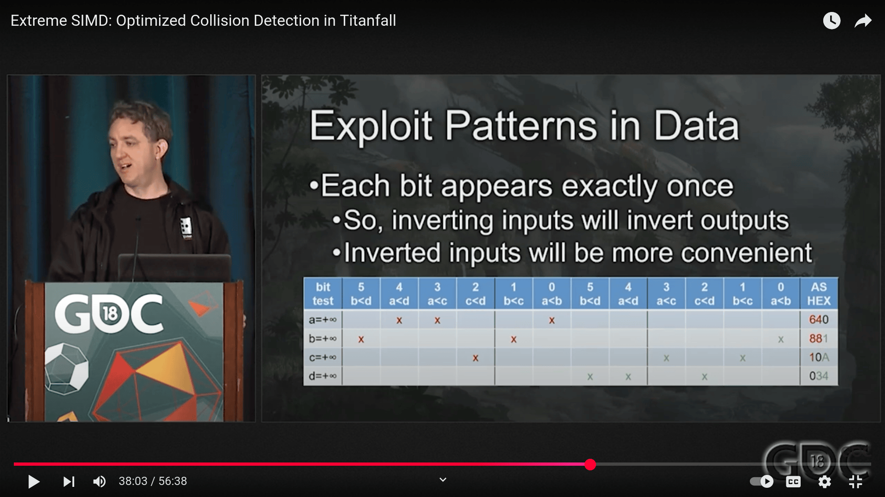

Philippe Gaultier
Philippe Gaultier
Philippe Gaultier
Philippe Gaultier
Published on 2025-02-18
SIMD and dedicated silicon to the rescue.
Discussions: /r/C_Programming, HN
I am writing a torrent application, to download and serve torrent files, in C, because it's fun. A torrent download is made of thousands of pieces of the same size, typically a few hundred KiB to a few MiB. At start-up, the program reads the downloaded file from disk piece by piece, computes the SHA1 hash of the piece, and marks this piece as downloaded if the actual hash is indeed the expected hash. We get from the .torrent file the expected hash of each piece.
When we have not downloaded anything yet, the file is completely empty (but still of the right size - we use ftruncate(2) to size it properly even if empty from the get go), and nearly every piece has the wrong hash. Some pieces will accidentally have the right hash, since they are all zeroes in the file we are downloading - good news then, with this approach we do not even have to download them at all!. If we continue an interrupted download (for example the computer restarted), some pieces will have the right hash, and some not. When the download is complete, all pieces will have the correct hash. That way, we know what what pieces we need to download, if any.
I read that some torrent clients prefer to skip this verification at startup because they persist their state in a separate file (perhaps a Sqlite database), each time a new piece is downloaded (and its hash is verified). However I favor doing a from scratch verification at startup for a few reasons, over the 'state file' approach:
For this reason I do not have a state file at all. It's simpler and a whole class of out-of-sync issues disappears.
So I have this big NetBSD image torrent that I primarily test with (by the way, thank you NetBSD maintainers for that!). It's not that big:
$ du -h ./NetBSD-9.4-amd64.iso
485M ./NetBSD-9.4-amd64.iso
But when I build my code in debug mode (no optimizations) with Address Sanitizer, to detect various issues early, startup takes 20 to 30 seconds (hashing at roughly ~ 18 KiB/s)! That's unbearable, especially when working in the debugger and inspecting some code that runs after the startup. We'd like to finish this verification under 1 second ideally. And making it fast is important, because until it finishes, we do not know which pieces we need to download so that blocks everything.
Let's see how we can speed it up.
It's important to note that in my case, to reduce third-party dependencies, the SHA1 code is vendored in the source tree and comes from OpenBSD. It is plain C code, not using SIMD or such. It's good because I can read it and understand it.
I entertained depending on OpenSSL or such, but it feels wasteful to pull in such a huge amount of code just for SHA1. And building OpenSSL ourselves, to tweak the build flags, means depending on Perl (and Go, in the case of aws-lc), and a lot of stuff. And now I need to pick between OpenSSL, LibreSSL, BoringSSL, aws-lc, etc. And upgrade it when the weekly security vulnerability gets announced. I don't want any of it, if I can help it. Also I want to understand from top to bottom what code I depend on.
For a while, due to this slowness, I simply gave up using a debug build, instead I use minimal optimizations (-O1) with Address Sanitizer. It was much faster, but lots of functions and variables got optimized away, and the debugging experience was thus sub par. I needed to make my debug + Address Sanitizer build viable. The debug build without Address Sanitizer is much faster: the startup 'only' takes around 2 seconds. But Address Sanitizer is very valuable, I want to be able to use it! And 2 seconds is still too long. Reducing the iteration cycle is often the deciding factor for software quality in my experience.
What's vexing is that from first principles, we know it could/should be much, much faster:
$ hyperfine --shell=none --warmup 3 'sha1sum ./NetBSD-9.4-amd64.iso'
Benchmark 1: sha1sum ./NetBSD-9.4-amd64.iso
Time (mean ± σ): 297.7 ms ± 3.2 ms [User: 235.8 ms, System: 60.9 ms]
Range (min … max): 293.7 ms … 304.2 ms 10 runs
Granted, computing the hash for the whole file should be slightly faster than computing the hash for N pieces, because the final step for SHA1 is about padding the data to make it 64 bytes aligned and extracting the digest value from the state computed so far with some bit operations. But still, it's a marginal difference.
Why is it so slow then? I can see on CPU profiles that the SHA1 function takes all of the startup time:
The SHA1 code is simplistic, it does not use any SIMD or intrinsics directly. And that's fine, because when it's compiled with optimizations on, the compiler does a pretty good job at optimizing, and it's really fast, around ~300 ms. But the issue is that this code is working one byte at a time. And Address Sanitizer, with its nice runtime and bounds checks, makes each memory access very expensive. So we basically have just written a worst-case stress-test for Address Sanitizer.
Let's first review the simple SIMD-less C version to understand the baseline.
To isolate the issue, I have created a simple benchmark program. It reads the .torrent file, and the download file, in my case the .iso NetBSD image. Every piece gets hashed and this gets compared with the expected value (a SHA1 hash, or digest, is 20 bytes long). To simplify this example, I skip the decoding of the .torrent file, and hard-code the piece length, as well as where exactly in the file are the expected hashes. The only difficulty is that the last piece might be shorter than the others so we need to compute its exact length to avoid going out of bounds:
#include <fcntl.h>
#include <inttypes.h>
#include "sha1_sw.c"
#include <stdbool.h>
#include <string.h>
#include <sys/mman.h>
#include <sys/stat.h>
#include <unistd.h>
static bool is_piece_valid(uint8_t *piece, uint64_t piece_len,
uint8_t digest_expected[20]) {
SHA_CTX ctx = {0};
SHA1_Init(&ctx);
SHA1_Update(&ctx, piece, piece_len);
uint8_t digest_actual[20] = {0};
SHA1_Final(digest_actual, &ctx);
return !memcmp(digest_actual, digest_expected, 20);
}
int main(int argc, char *argv[]) {
if (3 != argc) {
return 1;
}
int file_download = open(argv[1], O_RDONLY, 0600);
if (!file_download) {
return 1;
}
struct stat st_download = {0};
if (-1 == fstat(file_download, &st_download)) {
return 1;
}
size_t file_download_size = (size_t)st_download.st_size;
uint8_t *file_download_data = mmap(NULL, file_download_size, PROT_READ,
MAP_FILE | MAP_PRIVATE, file_download, 0);
if ((void*)-1 == file_download_data) {
return 1;
}
int file_torrent = open(argv[2], O_RDONLY, 0600);
if (!file_torrent) {
return 1;
}
struct stat st_torrent = {0};
if (-1 == fstat(file_torrent, &st_torrent)) {
return 1;
}
size_t file_torrent_size = (size_t)st_torrent.st_size;
uint8_t *file_torrent_data = mmap(NULL, file_torrent_size, PROT_READ,
MAP_FILE | MAP_PRIVATE, file_torrent, 0);
if ((void*)-1 == file_torrent_data) {
return 1;
}
// HACK
// The piece hashes begin at offset 237 in the file.
uint64_t file_torrent_data_offset = 237;
file_torrent_data += file_torrent_data_offset;
// The last character in the file must be ignored because it's the bencode dictionary closing character 'e'.
file_torrent_size -= file_torrent_data_offset - 1;
uint64_t piece_length = 262144;
uint64_t pieces_count = file_download_size / piece_length +
((0 == file_download_size % piece_length) ? 0 : 1);
for (uint64_t i = 0; i < pieces_count; i++) {
uint8_t *data = file_download_data + i * piece_length;
uint64_t piece_length_real = ((i + 1) == pieces_count)
? (file_download_size - i * piece_length)
: piece_length;
uint8_t *digest_expected = file_torrent_data + i * 20;
if (!is_piece_valid(data, piece_length_real, digest_expected)) {
return 1;
}
}
}
In Intel words, what is SHA1?
SHA-1 produces a 160 bit (20 byte) hash value (digest), taking as an input a sequence of 1 or more 512 bit (64 byte) data blocks. The original source data also requires some padding according to the standard. The data is treated as an array of big-endian 32-bit values. Processing each of the 64-byte input blocks consists of 80 iterations also known as rounds.
In this implementation:
SHA1_Init: the state is an array of 5 uint32_t, set to magic values defined by the standard.SHA1_Update: processing works on chunks of 64 bytes. The result of the processing of a chunk is that the state is updated to new values. Incoming data is buffered into the current chunk until it reaches 64 bytes, and that's when the real computation kicks in with SHA1_Transform. This API allows for reading and hashing data in a streaming fashion by repeatedly calling SHA1_Update.SHA1_Final: the last chunk is padded to 64 bytes if it is too short, processed, and the digest (the final 20 bytes we are after) is the current state, after endianness conversion.The SHA1 algorithm and some implementations support architectures where 1 byte is not 8 bits. But knowing that 1 byte is indeed 8 bits on our architecture unlocks a ton of performance as we'll see.
SHA1 expects data in big-endian but nearly all CPU nowadays are little-endian so we need to swap the bytes when loading the input data to do SHA1 computations, and back when storing the intermediate results (the SHA1 state). It is done here with lots of clever bit tricks, one uint32_t at a time.
The main loop operating on the 64 bytes chunk is unrolled, which avoids having conditionals in the middle of the loop, which might tank performance due to mispredicted branches. The algorithm lends itself to that really well:
for i from 0 to 79
if 0 ≤ i ≤ 19 then
[..]
else if 20 ≤ i ≤ 39
[..]
else if 40 ≤ i ≤ 59
[..]
else if 60 ≤ i ≤ 79
[..]
So it's trivial to unroll each section. We'll see that every implementation does the unrolling.
// sha1_sw.c
/* $OpenBSD: sha1.c,v 1.27 2019/06/07 22:56:36 dtucker Exp $ */
/*
* SHA-1 in C
* By Steve Reid <steve@edmweb.com>
* 100% Public Domain
*
* Test Vectors (from FIPS PUB 180-1)
* "abc"
* A9993E36 4706816A BA3E2571 7850C26C 9CD0D89D
* "abcdbcdecdefdefgefghfghighijhijkijkljklmklmnlmnomnopnopq"
* 84983E44 1C3BD26E BAAE4AA1 F95129E5 E54670F1
* A million repetitions of "a"
* 34AA973C D4C4DAA4 F61EEB2B DBAD2731 6534016F
*/
#include <inttypes.h>
#include <string.h>
#define SHA1_BLOCK_LENGTH 64
#define SHA1_DIGEST_LENGTH 20
#define SHA1_DIGEST_STRING_LENGTH (SHA1_DIGEST_LENGTH * 2 + 1)
typedef struct {
uint32_t state[5];
uint64_t count;
uint8_t buffer[SHA1_BLOCK_LENGTH];
} SHA1_CTX;
#define rol(value, bits) (((value) << (bits)) | ((value) >> (32 - (bits))))
/*
* blk0() and blk() perform the initial expand.
* I got the idea of expanding during the round function from SSLeay
*/
#define blk0(i) \
(block->l[i] = (rol(block->l[i], 24) & 0xFF00FF00) | \
(rol(block->l[i], 8) & 0x00FF00FF))
#define blk(i) \
(block->l[i & 15] = rol(block->l[(i + 13) & 15] ^ block->l[(i + 8) & 15] ^ \
block->l[(i + 2) & 15] ^ block->l[i & 15], \
1))
/*
* (R0+R1), R2, R3, R4 are the different operations (rounds) used in SHA1
*/
#define R0(v, w, x, y, z, i) \
z += ((w & (x ^ y)) ^ y) + blk0(i) + 0x5A827999 + rol(v, 5); \
w = rol(w, 30);
#define R1(v, w, x, y, z, i) \
z += ((w & (x ^ y)) ^ y) + blk(i) + 0x5A827999 + rol(v, 5); \
w = rol(w, 30);
#define R2(v, w, x, y, z, i) \
z += (w ^ x ^ y) + blk(i) + 0x6ED9EBA1 + rol(v, 5); \
w = rol(w, 30);
#define R3(v, w, x, y, z, i) \
z += (((w | x) & y) | (w & x)) + blk(i) + 0x8F1BBCDC + rol(v, 5); \
w = rol(w, 30);
#define R4(v, w, x, y, z, i) \
z += (w ^ x ^ y) + blk(i) + 0xCA62C1D6 + rol(v, 5); \
w = rol(w, 30);
typedef union {
uint8_t c[64];
uint32_t l[16];
} CHAR64LONG16;
/*
* Hash a single 512-bit block. This is the core of the algorithm.
*/
void SHA1Transform(uint32_t state[5], const uint8_t buffer[SHA1_BLOCK_LENGTH]) {
uint32_t a, b, c, d, e;
uint8_t workspace[SHA1_BLOCK_LENGTH];
CHAR64LONG16 *block = (CHAR64LONG16 *)workspace;
(void)memcpy(block, buffer, SHA1_BLOCK_LENGTH);
/* Copy context->state[] to working vars */
a = state[0];
b = state[1];
c = state[2];
d = state[3];
e = state[4];
/* 4 rounds of 20 operations each. Loop unrolled. */
R0(a, b, c, d, e, 0);
R0(e, a, b, c, d, 1);
R0(d, e, a, b, c, 2);
R0(c, d, e, a, b, 3);
R0(b, c, d, e, a, 4);
R0(a, b, c, d, e, 5);
R0(e, a, b, c, d, 6);
R0(d, e, a, b, c, 7);
R0(c, d, e, a, b, 8);
R0(b, c, d, e, a, 9);
R0(a, b, c, d, e, 10);
R0(e, a, b, c, d, 11);
R0(d, e, a, b, c, 12);
R0(c, d, e, a, b, 13);
R0(b, c, d, e, a, 14);
R0(a, b, c, d, e, 15);
R1(e, a, b, c, d, 16);
R1(d, e, a, b, c, 17);
R1(c, d, e, a, b, 18);
R1(b, c, d, e, a, 19);
R2(a, b, c, d, e, 20);
R2(e, a, b, c, d, 21);
R2(d, e, a, b, c, 22);
R2(c, d, e, a, b, 23);
R2(b, c, d, e, a, 24);
R2(a, b, c, d, e, 25);
R2(e, a, b, c, d, 26);
R2(d, e, a, b, c, 27);
R2(c, d, e, a, b, 28);
R2(b, c, d, e, a, 29);
R2(a, b, c, d, e, 30);
R2(e, a, b, c, d, 31);
R2(d, e, a, b, c, 32);
R2(c, d, e, a, b, 33);
R2(b, c, d, e, a, 34);
R2(a, b, c, d, e, 35);
R2(e, a, b, c, d, 36);
R2(d, e, a, b, c, 37);
R2(c, d, e, a, b, 38);
R2(b, c, d, e, a, 39);
R3(a, b, c, d, e, 40);
R3(e, a, b, c, d, 41);
R3(d, e, a, b, c, 42);
R3(c, d, e, a, b, 43);
R3(b, c, d, e, a, 44);
R3(a, b, c, d, e, 45);
R3(e, a, b, c, d, 46);
R3(d, e, a, b, c, 47);
R3(c, d, e, a, b, 48);
R3(b, c, d, e, a, 49);
R3(a, b, c, d, e, 50);
R3(e, a, b, c, d, 51);
R3(d, e, a, b, c, 52);
R3(c, d, e, a, b, 53);
R3(b, c, d, e, a, 54);
R3(a, b, c, d, e, 55);
R3(e, a, b, c, d, 56);
R3(d, e, a, b, c, 57);
R3(c, d, e, a, b, 58);
R3(b, c, d, e, a, 59);
R4(a, b, c, d, e, 60);
R4(e, a, b, c, d, 61);
R4(d, e, a, b, c, 62);
R4(c, d, e, a, b, 63);
R4(b, c, d, e, a, 64);
R4(a, b, c, d, e, 65);
R4(e, a, b, c, d, 66);
R4(d, e, a, b, c, 67);
R4(c, d, e, a, b, 68);
R4(b, c, d, e, a, 69);
R4(a, b, c, d, e, 70);
R4(e, a, b, c, d, 71);
R4(d, e, a, b, c, 72);
R4(c, d, e, a, b, 73);
R4(b, c, d, e, a, 74);
R4(a, b, c, d, e, 75);
R4(e, a, b, c, d, 76);
R4(d, e, a, b, c, 77);
R4(c, d, e, a, b, 78);
R4(b, c, d, e, a, 79);
/* Add the working vars back into context.state[] */
state[0] += a;
state[1] += b;
state[2] += c;
state[3] += d;
state[4] += e;
/* Wipe variables */
a = b = c = d = e = 0;
}
/*
* SHA1Init - Initialize new context
*/
void SHA1Init(SHA1_CTX *context) {
/* SHA1 initialization constants */
context->count = 0;
context->state[0] = 0x67452301;
context->state[1] = 0xEFCDAB89;
context->state[2] = 0x98BADCFE;
context->state[3] = 0x10325476;
context->state[4] = 0xC3D2E1F0;
}
/*
* Run your data through this.
*/
void SHA1Update(SHA1_CTX *context, const uint8_t *data, size_t len) {
size_t i, j;
j = (size_t)((context->count >> 3) & 63);
context->count += ((uint64_t)len << 3);
if ((j + len) > 63) {
(void)memcpy(&context->buffer[j], data, (i = 64 - j));
SHA1Transform(context->state, context->buffer);
for (; i + 63 < len; i += 64)
SHA1Transform(context->state, (uint8_t *)&data[i]);
j = 0;
} else {
i = 0;
}
(void)memcpy(&context->buffer[j], &data[i], len - i);
}
/*
* Add padding and return the message digest.
*/
void SHA1Pad(SHA1_CTX *context) {
uint8_t finalcount[8];
size_t i;
for (i = 0; i < 8; i++) {
finalcount[i] = (uint8_t)((context->count >> ((7 - (i & 7)) * 8)) &
255); /* Endian independent */
}
SHA1Update(context, (uint8_t *)"\200", 1);
while ((context->count & 504) != 448)
SHA1Update(context, (uint8_t *)"\0", 1);
SHA1Update(context, finalcount, 8); /* Should cause a SHA1Transform() */
}
void SHA1Final(uint8_t digest[SHA1_DIGEST_LENGTH], SHA1_CTX *context) {
size_t i;
SHA1Pad(context);
for (i = 0; i < SHA1_DIGEST_LENGTH; i++) {
digest[i] =
(uint8_t)((context->state[i >> 2] >> ((3 - (i & 3)) * 8)) & 255);
}
explicit_bzero(context, sizeof(*context));
}
The SHA1_xxx functions are lifted from OpenBSD (there are similar variants, e.g. from Sqlite, etc - they are all nearly identical)
When compiled in non-optimized mode with Address Sanitizer, we get this timing:
$ hyperfine --warmup 3 './a.out ./NetBSD-9.4-amd64.iso ~/Downloads/NetBSD-9.4-amd64.iso.torrent'
Benchmark 1: ./a.out ./NetBSD-9.4-amd64.iso ~/Downloads/NetBSD-9.4-amd64.iso.torrent
Time (mean ± σ): 26.312 s ± 0.734 s [User: 26.164 s, System: 0.066 s]
Range (min … max): 25.366 s … 27.780 s 10 runs
This is consistent with our real-life torrent program.
I experimented with doing a read syscall for each piece (that's what sha1sum does) versus using mmap, and there was no difference; additionally the system time is nothing compared to user time, so I/O is not the limiting factor - SHA1 computation is, as confirmed by the CPU profile.
So what can we do about it?
So let's do SIMD and learn cool new stuff! The nice thing about it is that we can always in the future also compute hashes in parallel, as well as use SIMD; the two approaches compose well together. I am reminded of an old adage:
You can't have multiple cores until you've shown you can use one efficiently.
This is an implementation from the early 2000s in the public domain. Yes, SSE, which is the first widespread SIMD instruction set, is from the nineties to early 2000s. More than 25 years ago! There's basically no reason to write SIMD-less code for performance sensitive code for a SIMD-friendly problem - every CPU we care about has SIMD! Well, we have two write separate implementations for x64 and ARM, and there were lots of additions to SSE over the years, that's the downside.
Intel references this implementation on their website. According to Intel, it was fundamental work at the time and influenced them. It's also not the fastest SSE implementation, the very article from Intel is about some performance enhancements they found for this code, but it has the advantage that if you have a processor from 2004 or after, it works, and it's simple.
I really am a SIMD beginner but I found a few interesting nuggets of wisdom here:
Just like the SIMD-less implementation, the loops are unrolled
Going from little-endian to big-endian (or back) is done with a SIMD shuffle. The way it works is by providing a bit mask that indicates which bits to copy from the source to the destination, and where to place them:
// `0x1b` == `0b0001_1011`.
// Will result in:
// [31:0] == [127:96] (due to bits [1:0] being `11`).
// [63:32] == [95:64] (due to bits [3:2] being `10`).
// [95:64] == [63:32] (due to bits [5:4] being `01`).
// [127:96] == [31:0] (due to bits [7:6] being `00`).
// I.e.: Transform state to big-endian.
ABCD = _mm_shuffle_epi32(ABCD, 0x1B);
It's nifty because we can copy the data in and out of SIMD registers, while also doing the endianness conversion, in one operation that typically compiles down to one assembly instruction. And this approach also works from a SIMD register to another SIMD register or inside the same register.
Typical SIMD code processes the data in groups of N bytes at a time, and the few excess bytes at the end use the normal SIMD-less code path. Here, we have to deal with an additional grouping: SHA1 processes data in chunks of 64 bytes and the last chunk is padded to be 64 bytes if it is too short. Hence, for the last short chunk we use the SIMD-less code path. We could try to be clever about doing the padding, and re-using the SIMD code path for this last chunk, since 64 bytes is a nice round number that is SIMD friendly, but this last chunk is not going to really make a difference in practice when we are dealing with megabytes or gigabytes of data.
typedef union {
uint32_t u32[4];
__m128i u128;
} v4si __attribute__((aligned(16)));
static const v4si K00_19 = {
.u32 = {0x5a827999, 0x5a827999, 0x5a827999, 0x5a827999}};
static const v4si K20_39 = {
.u32 = {0x6ed9eba1, 0x6ed9eba1, 0x6ed9eba1, 0x6ed9eba1}};
static const v4si K40_59 = {
.u32 = {0x8f1bbcdc, 0x8f1bbcdc, 0x8f1bbcdc, 0x8f1bbcdc}};
static const v4si K60_79 = {
.u32 = {0xca62c1d6, 0xca62c1d6, 0xca62c1d6, 0xca62c1d6}};
#define UNALIGNED 1
#if UNALIGNED
#define load(p) _mm_loadu_si128(p)
#else
#define load(p) (*p)
#endif
/*
the first 16 bytes only need byte swapping
prepared points to 4x uint32_t, 16-byte aligned
W points to the 4 dwords which need preparing --
and is overwritten with the swapped bytes
*/
#define prep00_15(prep, W) \
do { \
__m128i r1, r2; \
\
r1 = (W); \
if (1) { \
r1 = _mm_shufflehi_epi16(r1, _MM_SHUFFLE(2, 3, 0, 1)); \
r1 = _mm_shufflelo_epi16(r1, _MM_SHUFFLE(2, 3, 0, 1)); \
r2 = _mm_slli_epi16(r1, 8); \
r1 = _mm_srli_epi16(r1, 8); \
r1 = _mm_or_si128(r1, r2); \
(W) = r1; \
} \
(prep).u128 = _mm_add_epi32(K00_19.u128, r1); \
} while (0)
/*
for each multiple of 4, t, we want to calculate this:
W[t+0] = rol(W[t-3] ^ W[t-8] ^ W[t-14] ^ W[t-16], 1);
W[t+1] = rol(W[t-2] ^ W[t-7] ^ W[t-13] ^ W[t-15], 1);
W[t+2] = rol(W[t-1] ^ W[t-6] ^ W[t-12] ^ W[t-14], 1);
W[t+3] = rol(W[t] ^ W[t-5] ^ W[t-11] ^ W[t-13], 1);
we'll actually calculate this:
W[t+0] = rol(W[t-3] ^ W[t-8] ^ W[t-14] ^ W[t-16], 1);
W[t+1] = rol(W[t-2] ^ W[t-7] ^ W[t-13] ^ W[t-15], 1);
W[t+2] = rol(W[t-1] ^ W[t-6] ^ W[t-12] ^ W[t-14], 1);
W[t+3] = rol( 0 ^ W[t-5] ^ W[t-11] ^ W[t-13], 1);
W[t+3] ^= rol(W[t+0], 1);
the parameters are:
W0 = &W[t-16];
W1 = &W[t-12];
W2 = &W[t- 8];
W3 = &W[t- 4];
and on output:
prepared = W0 + K
W0 = W[t]..W[t+3]
*/
/* note that there is a step here where i want to do a rol by 1, which
* normally would look like this:
*
* r1 = psrld r0,$31
* r0 = pslld r0,$1
* r0 = por r0,r1
*
* but instead i do this:
*
* r1 = pcmpltd r0,zero
* r0 = paddd r0,r0
* r0 = psub r0,r1
*
* because pcmpltd and paddd are availabe in both MMX units on
* efficeon, pentium-m, and opteron but shifts are available in
* only one unit.
*/
#define prep(prep, XW0, XW1, XW2, XW3, K) \
do { \
__m128i r0, r1, r2, r3; \
\
/* load W[t-4] 16-byte aligned, and shift */ \
r3 = _mm_srli_si128((XW3), 4); \
r0 = (XW0); \
/* get high 64-bits of XW0 into low 64-bits */ \
r1 = _mm_shuffle_epi32((XW0), _MM_SHUFFLE(1, 0, 3, 2)); \
/* load high 64-bits of r1 */ \
r1 = _mm_unpacklo_epi64(r1, (XW1)); \
r2 = (XW2); \
\
r0 = _mm_xor_si128(r1, r0); \
r2 = _mm_xor_si128(r3, r2); \
r0 = _mm_xor_si128(r2, r0); \
/* unrotated W[t]..W[t+2] in r0 ... still need W[t+3] */ \
\
r2 = _mm_slli_si128(r0, 12); \
r1 = _mm_cmplt_epi32(r0, _mm_setzero_si128()); \
r0 = _mm_add_epi32(r0, r0); /* shift left by 1 */ \
r0 = _mm_sub_epi32(r0, r1); /* r0 has W[t]..W[t+2] */ \
\
r3 = _mm_srli_epi32(r2, 30); \
r2 = _mm_slli_epi32(r2, 2); \
\
r0 = _mm_xor_si128(r0, r3); \
r0 = _mm_xor_si128(r0, r2); /* r0 now has W[t+3] */ \
\
(XW0) = r0; \
(prep).u128 = _mm_add_epi32(r0, (K).u128); \
} while (0)
static inline uint32_t f00_19(uint32_t x, uint32_t y, uint32_t z) {
/* FIPS 180-2 says this: (x & y) ^ (~x & z)
* but we can calculate it in fewer steps.
*/
return ((y ^ z) & x) ^ z;
}
static inline uint32_t f20_39(uint32_t x, uint32_t y, uint32_t z) {
return (x ^ z) ^ y;
}
static inline uint32_t f40_59(uint32_t x, uint32_t y, uint32_t z) {
/* FIPS 180-2 says this: (x & y) ^ (x & z) ^ (y & z)
* but we can calculate it in fewer steps.
*/
return (x & z) | ((x | z) & y);
}
static inline uint32_t f60_79(uint32_t x, uint32_t y, uint32_t z) {
return f20_39(x, y, z);
}
#define step(nn_mm, xa, xb, xc, xd, xe, xt, input) \
do { \
(xt) = (input) + f##nn_mm((xb), (xc), (xd)); \
(xb) = rol((xb), 30); \
(xt) += ((xe) + rol((xa), 5)); \
} while (0)
[[maybe_unused]]
static void sha1_sse_step(uint32_t *restrict H, const uint32_t *restrict inputu,
size_t num_steps) {
const __m128i *restrict input = (const __m128i *)inputu;
__m128i W0, W1, W2, W3;
v4si prep0, prep1, prep2;
uint32_t a, b, c, d, e, t;
a = H[0];
b = H[1];
c = H[2];
d = H[3];
e = H[4];
/* i've tried arranging the SSE2 code to be 4, 8, 12, and 16
* steps ahead of the integer code. 12 steps ahead seems
* to produce the best performance. -dean
*/
W0 = load(&input[0]);
prep00_15(prep0, W0); /* prepare for 00 through 03 */
W1 = load(&input[1]);
prep00_15(prep1, W1); /* prepare for 04 through 07 */
W2 = load(&input[2]);
prep00_15(prep2, W2); /* prepare for 08 through 11 */
for (;;) {
W3 = load(&input[3]);
step(00_19, a, b, c, d, e, t, prep0.u32[0]); /* 00 */
step(00_19, t, a, b, c, d, e, prep0.u32[1]); /* 01 */
step(00_19, e, t, a, b, c, d, prep0.u32[2]); /* 02 */
step(00_19, d, e, t, a, b, c, prep0.u32[3]); /* 03 */
prep00_15(prep0, W3);
step(00_19, c, d, e, t, a, b, prep1.u32[0]); /* 04 */
step(00_19, b, c, d, e, t, a, prep1.u32[1]); /* 05 */
step(00_19, a, b, c, d, e, t, prep1.u32[2]); /* 06 */
step(00_19, t, a, b, c, d, e, prep1.u32[3]); /* 07 */
prep(prep1, W0, W1, W2, W3, K00_19); /* prepare for 16 through 19 */
step(00_19, e, t, a, b, c, d, prep2.u32[0]); /* 08 */
step(00_19, d, e, t, a, b, c, prep2.u32[1]); /* 09 */
step(00_19, c, d, e, t, a, b, prep2.u32[2]); /* 10 */
step(00_19, b, c, d, e, t, a, prep2.u32[3]); /* 11 */
prep(prep2, W1, W2, W3, W0, K20_39); /* prepare for 20 through 23 */
step(00_19, a, b, c, d, e, t, prep0.u32[0]); /* 12 */
step(00_19, t, a, b, c, d, e, prep0.u32[1]); /* 13 */
step(00_19, e, t, a, b, c, d, prep0.u32[2]); /* 14 */
step(00_19, d, e, t, a, b, c, prep0.u32[3]); /* 15 */
prep(prep0, W2, W3, W0, W1, K20_39);
step(00_19, c, d, e, t, a, b, prep1.u32[0]); /* 16 */
step(00_19, b, c, d, e, t, a, prep1.u32[1]); /* 17 */
step(00_19, a, b, c, d, e, t, prep1.u32[2]); /* 18 */
step(00_19, t, a, b, c, d, e, prep1.u32[3]); /* 19 */
prep(prep1, W3, W0, W1, W2, K20_39);
step(20_39, e, t, a, b, c, d, prep2.u32[0]); /* 20 */
step(20_39, d, e, t, a, b, c, prep2.u32[1]); /* 21 */
step(20_39, c, d, e, t, a, b, prep2.u32[2]); /* 22 */
step(20_39, b, c, d, e, t, a, prep2.u32[3]); /* 23 */
prep(prep2, W0, W1, W2, W3, K20_39);
step(20_39, a, b, c, d, e, t, prep0.u32[0]); /* 24 */
step(20_39, t, a, b, c, d, e, prep0.u32[1]); /* 25 */
step(20_39, e, t, a, b, c, d, prep0.u32[2]); /* 26 */
step(20_39, d, e, t, a, b, c, prep0.u32[3]); /* 27 */
prep(prep0, W1, W2, W3, W0, K20_39);
step(20_39, c, d, e, t, a, b, prep1.u32[0]); /* 28 */
step(20_39, b, c, d, e, t, a, prep1.u32[1]); /* 29 */
step(20_39, a, b, c, d, e, t, prep1.u32[2]); /* 30 */
step(20_39, t, a, b, c, d, e, prep1.u32[3]); /* 31 */
prep(prep1, W2, W3, W0, W1, K40_59);
step(20_39, e, t, a, b, c, d, prep2.u32[0]); /* 32 */
step(20_39, d, e, t, a, b, c, prep2.u32[1]); /* 33 */
step(20_39, c, d, e, t, a, b, prep2.u32[2]); /* 34 */
step(20_39, b, c, d, e, t, a, prep2.u32[3]); /* 35 */
prep(prep2, W3, W0, W1, W2, K40_59);
step(20_39, a, b, c, d, e, t, prep0.u32[0]); /* 36 */
step(20_39, t, a, b, c, d, e, prep0.u32[1]); /* 37 */
step(20_39, e, t, a, b, c, d, prep0.u32[2]); /* 38 */
step(20_39, d, e, t, a, b, c, prep0.u32[3]); /* 39 */
prep(prep0, W0, W1, W2, W3, K40_59);
step(40_59, c, d, e, t, a, b, prep1.u32[0]); /* 40 */
step(40_59, b, c, d, e, t, a, prep1.u32[1]); /* 41 */
step(40_59, a, b, c, d, e, t, prep1.u32[2]); /* 42 */
step(40_59, t, a, b, c, d, e, prep1.u32[3]); /* 43 */
prep(prep1, W1, W2, W3, W0, K40_59);
step(40_59, e, t, a, b, c, d, prep2.u32[0]); /* 44 */
step(40_59, d, e, t, a, b, c, prep2.u32[1]); /* 45 */
step(40_59, c, d, e, t, a, b, prep2.u32[2]); /* 46 */
step(40_59, b, c, d, e, t, a, prep2.u32[3]); /* 47 */
prep(prep2, W2, W3, W0, W1, K40_59);
step(40_59, a, b, c, d, e, t, prep0.u32[0]); /* 48 */
step(40_59, t, a, b, c, d, e, prep0.u32[1]); /* 49 */
step(40_59, e, t, a, b, c, d, prep0.u32[2]); /* 50 */
step(40_59, d, e, t, a, b, c, prep0.u32[3]); /* 51 */
prep(prep0, W3, W0, W1, W2, K60_79);
step(40_59, c, d, e, t, a, b, prep1.u32[0]); /* 52 */
step(40_59, b, c, d, e, t, a, prep1.u32[1]); /* 53 */
step(40_59, a, b, c, d, e, t, prep1.u32[2]); /* 54 */
step(40_59, t, a, b, c, d, e, prep1.u32[3]); /* 55 */
prep(prep1, W0, W1, W2, W3, K60_79);
step(40_59, e, t, a, b, c, d, prep2.u32[0]); /* 56 */
step(40_59, d, e, t, a, b, c, prep2.u32[1]); /* 57 */
step(40_59, c, d, e, t, a, b, prep2.u32[2]); /* 58 */
step(40_59, b, c, d, e, t, a, prep2.u32[3]); /* 59 */
prep(prep2, W1, W2, W3, W0, K60_79);
step(60_79, a, b, c, d, e, t, prep0.u32[0]); /* 60 */
step(60_79, t, a, b, c, d, e, prep0.u32[1]); /* 61 */
step(60_79, e, t, a, b, c, d, prep0.u32[2]); /* 62 */
step(60_79, d, e, t, a, b, c, prep0.u32[3]); /* 63 */
prep(prep0, W2, W3, W0, W1, K60_79);
step(60_79, c, d, e, t, a, b, prep1.u32[0]); /* 64 */
step(60_79, b, c, d, e, t, a, prep1.u32[1]); /* 65 */
step(60_79, a, b, c, d, e, t, prep1.u32[2]); /* 66 */
step(60_79, t, a, b, c, d, e, prep1.u32[3]); /* 67 */
prep(prep1, W3, W0, W1, W2, K60_79);
step(60_79, e, t, a, b, c, d, prep2.u32[0]); /* 68 */
step(60_79, d, e, t, a, b, c, prep2.u32[1]); /* 69 */
step(60_79, c, d, e, t, a, b, prep2.u32[2]); /* 70 */
step(60_79, b, c, d, e, t, a, prep2.u32[3]); /* 71 */
--num_steps;
if (num_steps == 0)
break;
input += 4;
W0 = load(&input[0]);
prep00_15(prep2, W0); /* prepare for next 00 through 03 */
W1 = load(&input[1]);
step(60_79, a, b, c, d, e, t, prep0.u32[0]); /* 72 */
step(60_79, t, a, b, c, d, e, prep0.u32[1]); /* 73 */
step(60_79, e, t, a, b, c, d, prep0.u32[2]); /* 74 */
step(60_79, d, e, t, a, b, c, prep0.u32[3]); /* 75 */
prep0 = prep2; /* top of loop expects this in prep0 */
prep00_15(prep2, W1); /* prepare for next 04 through 07 */
W2 = load(&input[2]);
step(60_79, c, d, e, t, a, b, prep1.u32[0]); /* 76 */
step(60_79, b, c, d, e, t, a, prep1.u32[1]); /* 77 */
step(60_79, a, b, c, d, e, t, prep1.u32[2]); /* 78 */
step(60_79, t, a, b, c, d, e, prep1.u32[3]); /* 79 */
prep1 = prep2; /* top of loop expects this in prep1 */
prep00_15(prep2, W2); /* prepare for next 08 through 11 */
/* e, t, a, b, c, d */
H[0] += e;
H[1] += t;
H[2] += a;
H[3] += b;
H[4] += c;
a = H[0];
b = H[1];
c = H[2];
d = H[3];
e = H[4];
}
/* no more input to prepare */
step(60_79, a, b, c, d, e, t, prep0.u32[0]); /* 72 */
step(60_79, t, a, b, c, d, e, prep0.u32[1]); /* 73 */
step(60_79, e, t, a, b, c, d, prep0.u32[2]); /* 74 */
step(60_79, d, e, t, a, b, c, prep0.u32[3]); /* 75 */
/* no more input to prepare */
step(60_79, c, d, e, t, a, b, prep1.u32[0]); /* 76 */
step(60_79, b, c, d, e, t, a, prep1.u32[1]); /* 77 */
step(60_79, a, b, c, d, e, t, prep1.u32[2]); /* 78 */
step(60_79, t, a, b, c, d, e, prep1.u32[3]); /* 79 */
/* e, t, a, b, c, d */
H[0] += e;
H[1] += t;
H[2] += a;
H[3] += b;
H[4] += c;
}
Our is_piece_valid function now becomes:
static bool is_piece_valid(uint8_t *piece, uint64_t piece_len,
uint8_t digest_expected[20]) {
SHA1_CTX ctx = {0};
SHA1Init(&ctx);
// Process as many SHA1 64 bytes chunks as possible.
uint64_t len_rounded_down = (piece_len / 64) * 64;
uint64_t rem = piece_len % 64;
uint64_t steps = len_rounded_down / 64;
sha1_sse_step(ctx.state, piece, steps);
// Process the excess.
memcpy(ctx.buffer, piece + len_rounded_down, rem);
// `count` is in bits: multiple the number of bytes by 8.
ctx.count = piece_len * 8;
uint8_t digest_actual[20] = {0};
SHA1Final(digest_actual, &ctx);
return !memcmp(digest_actual, digest_expected, 20);
}
So predictably, since we now process 4 uint32_t at a time instead of one, we observe roughly a 4x speed-up (still in debug + Address Sanitizer mode):
$ hyperfine --warmup 3 './a.out ./NetBSD-9.4-amd64.iso ~/Downloads/NetBSD-9.4-amd64.iso.torrent'
Benchmark 1: ./a.out ./NetBSD-9.4-amd64.iso ~/Downloads/NetBSD-9.4-amd64.iso.torrent
Time (mean ± σ): 8.093 s ± 0.272 s [User: 8.010 s, System: 0.060 s]
Range (min … max): 7.784 s … 8.684 s 10 runs
That's better but still not great. We could apply the tweaks suggested by Intel, but that probably would not give us the order of magnitude improvement we need. They cite x1.2 to x1.5 improvements in their article. We need more.
So... did you know that in all likelihood, your CPU has dedicated silicon to accelerate SHA1 computations? Let's use that! We paid for it, we get to use it!
Despite the 'Intel' name, Intel as well as AMD CPUs have been shipping with this extension, since around 2016-2017. It adds a few SIMD instructions dedicated to compute SHA1 (and SHA256, and other variants). Note that ARM also has an equivalent (albeit incompatible, of course) extension so the same can be done there.
There is an irony here, because 2017 is also the year where the first SHA1 public collision was published, which incited many developers to move away from SHA1...
The advantage is that the structure of the code can remain the same: we still are using 128 bits SIMD registers, still computing SHA1 chunks of 64 bytes at a time. It's just that a few operations get faster and the code is generally shorter and clearer, and the main part is branchless.
The implementation is a pure work of art, and comes from this Github repository. I have commented lots of it for clarity.
The unit of work here is still 128 bits (or 4 uint32_t). Unfortunately, the SHA1 state that we are continuously updating, and from which the final digest is extracted, is 5 uint32_t. So we are in a pickle since it does not fit neatly in one SIMD register. Thus, we have to do one SIMD operation on the first 4 uint32_t, named ABCD, and another one with the last uint32_t, named E. So this second operation is a bit wasteful: our 128 bits only contain 1/4 of useful data, and our CPU does computations on a bunch of zeroes which will be thrown away. But there is no other way: SIMD uses a different set of registers from the standard ones. We want to stay in SIMD land as much as possible, that's where the performance is.
Endianness conversion is done with one SIMD instruction, same as before (so 4 uint32_t at a time).
The SHA Intel extension provides 4 operations:
sha1rnds4 to compute the next ABCD statesha1nexte: to compute the next E state (remember, E is alone in its 128 bits register)sha1msg1 and sha1msg2: they perform the SHA1 computations solely based on the input dataThus we alternate between SHA1 computations with sha1msg1/sha1msg2, and state calculations with sha1rnds4/sha1nexte, always 4 uint32_t at a time.
What's a "SHA computation"? It's basically a recombination, or shuffling, of its input. For example, sha1msg1 in pseudo-code does:
W0 <- SRC1[127:96] ;
W1 <- SRC1[95:64] ;
W2 <- SRC1[63: 32] ;
W3 <- SRC1[31: 0] ;
W4 <- SRC2[127:96] ;
W5 <- SRC2[95:64] ;
DEST[127:96] <- W2 XOR W0;
DEST[95:64] <- W3 XOR W1;
DEST[63:32] <- W4 XOR W2;
DEST[31:0] <- W5 XOR W3;
The first 16 rounds, we do that on the input data (i.e. the download file). But for the remaining rounds (SHA1 does 80 rounds for a 64 byte chunk), the input is computations from previous rounds.
sha1msg2 does slightly different computations but still very similar.
// Process as many 64 bytes chunks as possible.
[[maybe_unused]]
static void sha1_sha_ext(uint32_t state[5], const uint8_t data[],
uint32_t length) {
__m128i ABCD, ABCD_SAVE, E0, E0_SAVE, E1;
__m128i MSG0, MSG1, MSG2, MSG3;
const __m128i MASK =
// As 16 u8: `0 1 2 3 4 5 6 7 8 9 10 11 12 13 14 15`.
_mm_set_epi64x(0x0001020304050607ULL, 0x08090a0b0c0d0e0fULL);
/* Load initial values */
ABCD = _mm_loadu_si128((const __m128i *)(void *)state);
E0 = _mm_set_epi32((int)state[4], 0, 0, 0);
// Transform state to big-endian.
ABCD = _mm_shuffle_epi32(ABCD, 0x1B);
while (length >= 64) {
/* Save current state */
ABCD_SAVE = ABCD;
E0_SAVE = E0;
/* Rounds 0-3 */
// Load `data[0:16]`.
MSG0 = _mm_loadu_si128((const __m128i *)(void *)(data + 0));
// Convert MSG0 to big-endian.
MSG0 = _mm_shuffle_epi8(MSG0, MASK);
// E0 += MSG0
E0 = _mm_add_epi32(E0, MSG0);
E1 = ABCD;
// Perform 4 rounds of SHA1 operation.
ABCD = (__m128i)_mm_sha1rnds4_epu32(ABCD, E0, 0);
/* Rounds 4-7 */
// Load `data[16:32]`.
MSG1 = _mm_loadu_si128((const __m128i *)(void *)(data + 16));
// Convert to big-endian.
MSG1 = _mm_shuffle_epi8(MSG1, MASK);
// Compute the SHA1 state variable E after 4 rounds.
// It is added to the source operand (`E1`).
E1 = _mm_sha1nexte_epu32(E1, MSG1);
E0 = ABCD;
// Perform 4 rounds of SHA1 operation.
ABCD = (__m128i)_mm_sha1rnds4_epu32(ABCD, E1, 0);
// Perform the intermediate calculation for the next four SHA1 message dwords (128 bits).
MSG0 = _mm_sha1msg1_epu32(MSG0, MSG1);
/* Rounds 8-11 */
// Load `data[32:48]`.
MSG2 = _mm_loadu_si128((const __m128i *)(void *)(data + 32));
// Convert to big-endian.
MSG2 = _mm_shuffle_epi8(MSG2, MASK);
// Compute the SHA1 state variable E after 4 rounds.
E0 = _mm_sha1nexte_epu32(E0, MSG2);
E1 = ABCD;
ABCD = (__m128i)_mm_sha1rnds4_epu32(ABCD, E0, 0);
MSG1 = _mm_sha1msg1_epu32(MSG1, MSG2);
MSG0 = _mm_xor_si128(MSG0, MSG2);
/* Rounds 12-15 */
// Load `data[48:64]`.
MSG3 = _mm_loadu_si128((const __m128i *)(void *)(data + 48));
// Convert to big-endian.
MSG3 = _mm_shuffle_epi8(MSG3, MASK);
// Compute the SHA1 state variable E after 4 rounds.
E1 = _mm_sha1nexte_epu32(E1, MSG3);
E0 = ABCD;
// Perform a final calculation for the next four SHA1 message dwords.
MSG0 = _mm_sha1msg2_epu32(MSG0, MSG3);
ABCD = (__m128i)_mm_sha1rnds4_epu32(ABCD, E1, 0);
MSG2 = _mm_sha1msg1_epu32(MSG2, MSG3);
MSG1 = _mm_xor_si128(MSG1, MSG3);
/* Rounds 16-19 */
E0 = _mm_sha1nexte_epu32(E0, MSG0);
E1 = ABCD;
MSG1 = _mm_sha1msg2_epu32(MSG1, MSG0);
ABCD = (__m128i)_mm_sha1rnds4_epu32(ABCD, E0, 0);
MSG3 = _mm_sha1msg1_epu32(MSG3, MSG0);
MSG2 = _mm_xor_si128(MSG2, MSG0);
/* Rounds 20-23 */
E1 = _mm_sha1nexte_epu32(E1, MSG1);
E0 = ABCD;
MSG2 = _mm_sha1msg2_epu32(MSG2, MSG1);
ABCD = (__m128i)_mm_sha1rnds4_epu32(ABCD, E1, 1);
MSG0 = _mm_sha1msg1_epu32(MSG0, MSG1);
MSG3 = _mm_xor_si128(MSG3, MSG1);
/* Rounds 24-27 */
E0 = _mm_sha1nexte_epu32(E0, MSG2);
E1 = ABCD;
MSG3 = _mm_sha1msg2_epu32(MSG3, MSG2);
ABCD = (__m128i)_mm_sha1rnds4_epu32(ABCD, E0, 1);
MSG1 = _mm_sha1msg1_epu32(MSG1, MSG2);
MSG0 = _mm_xor_si128(MSG0, MSG2);
/* Rounds 28-31 */
E1 = _mm_sha1nexte_epu32(E1, MSG3);
E0 = ABCD;
MSG0 = _mm_sha1msg2_epu32(MSG0, MSG3);
ABCD = (__m128i)_mm_sha1rnds4_epu32(ABCD, E1, 1);
MSG2 = _mm_sha1msg1_epu32(MSG2, MSG3);
MSG1 = _mm_xor_si128(MSG1, MSG3);
/* Rounds 32-35 */
E0 = _mm_sha1nexte_epu32(E0, MSG0);
E1 = ABCD;
MSG1 = _mm_sha1msg2_epu32(MSG1, MSG0);
ABCD = (__m128i)_mm_sha1rnds4_epu32(ABCD, E0, 1);
MSG3 = _mm_sha1msg1_epu32(MSG3, MSG0);
MSG2 = _mm_xor_si128(MSG2, MSG0);
/* Rounds 36-39 */
E1 = _mm_sha1nexte_epu32(E1, MSG1);
E0 = ABCD;
MSG2 = _mm_sha1msg2_epu32(MSG2, MSG1);
ABCD = (__m128i)_mm_sha1rnds4_epu32(ABCD, E1, 1);
MSG0 = _mm_sha1msg1_epu32(MSG0, MSG1);
MSG3 = _mm_xor_si128(MSG3, MSG1);
/* Rounds 40-43 */
E0 = _mm_sha1nexte_epu32(E0, MSG2);
E1 = ABCD;
MSG3 = _mm_sha1msg2_epu32(MSG3, MSG2);
ABCD = (__m128i)_mm_sha1rnds4_epu32(ABCD, E0, 2);
MSG1 = _mm_sha1msg1_epu32(MSG1, MSG2);
MSG0 = _mm_xor_si128(MSG0, MSG2);
/* Rounds 44-47 */
E1 = _mm_sha1nexte_epu32(E1, MSG3);
E0 = ABCD;
MSG0 = _mm_sha1msg2_epu32(MSG0, MSG3);
ABCD = (__m128i)_mm_sha1rnds4_epu32(ABCD, E1, 2);
MSG2 = _mm_sha1msg1_epu32(MSG2, MSG3);
MSG1 = _mm_xor_si128(MSG1, MSG3);
/* Rounds 48-51 */
E0 = _mm_sha1nexte_epu32(E0, MSG0);
E1 = ABCD;
MSG1 = _mm_sha1msg2_epu32(MSG1, MSG0);
ABCD = (__m128i)_mm_sha1rnds4_epu32(ABCD, E0, 2);
MSG3 = _mm_sha1msg1_epu32(MSG3, MSG0);
MSG2 = _mm_xor_si128(MSG2, MSG0);
/* Rounds 52-55 */
E1 = _mm_sha1nexte_epu32(E1, MSG1);
E0 = ABCD;
MSG2 = _mm_sha1msg2_epu32(MSG2, MSG1);
ABCD = (__m128i)_mm_sha1rnds4_epu32(ABCD, E1, 2);
MSG0 = _mm_sha1msg1_epu32(MSG0, MSG1);
MSG3 = _mm_xor_si128(MSG3, MSG1);
/* Rounds 56-59 */
E0 = _mm_sha1nexte_epu32(E0, MSG2);
E1 = ABCD;
MSG3 = _mm_sha1msg2_epu32(MSG3, MSG2);
ABCD = (__m128i)_mm_sha1rnds4_epu32(ABCD, E0, 2);
MSG1 = _mm_sha1msg1_epu32(MSG1, MSG2);
MSG0 = _mm_xor_si128(MSG0, MSG2);
/* Rounds 60-63 */
E1 = _mm_sha1nexte_epu32(E1, MSG3);
E0 = ABCD;
MSG0 = _mm_sha1msg2_epu32(MSG0, MSG3);
ABCD = (__m128i)_mm_sha1rnds4_epu32(ABCD, E1, 3);
MSG2 = _mm_sha1msg1_epu32(MSG2, MSG3);
MSG1 = _mm_xor_si128(MSG1, MSG3);
/* Rounds 64-67 */
E0 = _mm_sha1nexte_epu32(E0, MSG0);
E1 = ABCD;
MSG1 = _mm_sha1msg2_epu32(MSG1, MSG0);
ABCD = (__m128i)_mm_sha1rnds4_epu32(ABCD, E0, 3);
MSG3 = _mm_sha1msg1_epu32(MSG3, MSG0);
MSG2 = _mm_xor_si128(MSG2, MSG0);
/* Rounds 68-71 */
E1 = _mm_sha1nexte_epu32(E1, MSG1);
E0 = ABCD;
MSG2 = _mm_sha1msg2_epu32(MSG2, MSG1);
ABCD = (__m128i)_mm_sha1rnds4_epu32(ABCD, E1, 3);
MSG3 = _mm_xor_si128(MSG3, MSG1);
/* Rounds 72-75 */
E0 = _mm_sha1nexte_epu32(E0, MSG2);
E1 = ABCD;
MSG3 = _mm_sha1msg2_epu32(MSG3, MSG2);
ABCD = (__m128i)_mm_sha1rnds4_epu32(ABCD, E0, 3);
/* Rounds 76-79 */
E1 = _mm_sha1nexte_epu32(E1, MSG3);
E0 = ABCD;
ABCD = (__m128i)_mm_sha1rnds4_epu32(ABCD, E1, 3);
/* Combine state */
E0 = _mm_sha1nexte_epu32(E0, E0_SAVE);
// ABCD += ABCD_SAVE
ABCD = _mm_add_epi32(ABCD, ABCD_SAVE);
data += 64;
length -= 64;
}
/* Save state */
// Convert back to little-endian.
ABCD = _mm_shuffle_epi32(ABCD, 0x1B);
_mm_storeu_si128((__m128i *)(void *)state, ABCD);
// Convert back to little-endian.
state[4] = (uint32_t)_mm_extract_epi32(E0, 3);
}
Our is_piece_valid function is practically identical to the last section:
static bool is_piece_valid(uint8_t *piece, uint64_t piece_len,
uint8_t digest_expected[20]) {
SHA1_CTX ctx = {0};
SHA1Init(&ctx);
// Process as many SHA1 64 bytes chunks as possible.
uint64_t len_rounded_down = (piece_len / 64) * 64;
uint64_t rem = piece_len % 64;
sha1_sha_ext(ctx.state, piece, (uint32_t)len_rounded_down);
memcpy(ctx.buffer, piece + len_rounded_down, rem);
ctx.count = piece_len * 8;
uint8_t digest_actual[20] = {0};
SHA1Final(digest_actual, &ctx);
return !memcmp(digest_actual, digest_expected, 20);
}
How fast?
$ hyperfine --warmup 3 './a.out ./NetBSD-9.4-amd64.iso ~/Downloads/NetBSD-9.4-amd64.iso.torrent'
Benchmark 1: ./a.out ./NetBSD-9.4-amd64.iso ~/Downloads/NetBSD-9.4-amd64.iso.torrent
Time (mean ± σ): 866.9 ms ± 17.4 ms [User: 809.6 ms, System: 54.4 ms]
Range (min … max): 839.7 ms … 901.4 ms 10 runs
Now that's what I'm talking about, ~ 571 MiB/s. Around a 10x speed-up compared to the basic SSE implementation! And now we are running under a second. Also the variability is much reduced which is nice.
What about a release build (without Address Sanitizer), for comparison?
This is the SIMD-less version with -O2 -march=native, benefiting from some auto-vectorization:
$ hyperfine --warmup 3 './a.out ./NetBSD-9.4-amd64.iso ~/Downloads/NetBSD-9.4-amd64.iso.torrent'
Benchmark 1: ./a.out ./NetBSD-9.4-amd64.iso ~/Downloads/NetBSD-9.4-amd64.iso.torrent
Time (mean ± σ): 617.8 ms ± 20.9 ms [User: 573.6 ms, System: 42.2 ms]
Range (min … max): 598.7 ms … 669.1 ms 10 runs
That's ~ 802 Mib/s.
And this is the code using the SHA extension, again with -O2 -march=native:
$ hyperfine --warmup 3 './a.out ./NetBSD-9.4-amd64.iso ~/Downloads/NetBSD-9.4-amd64.iso.torrent'
Benchmark 1: ./a.out ./NetBSD-9.4-amd64.iso ~/Downloads/NetBSD-9.4-amd64.iso.torrent
Time (mean ± σ): 281.2 ms ± 5.4 ms [User: 240.6 ms, System: 39.6 ms]
Range (min … max): 276.1 ms … 294.3 ms 10 runs
That's ~ 1.8 Gib/s.
Unsurprisingly, when inspecting the generated assembly code for the SIMD-less version, the auto-vectorization is very limited and does not use the SHA extension (compilers are smart, but not that smart).
As such, it's still very impressive that it reaches such a high performance. My guess is that the compiler does a good job at analyzing data dependencies and reordering statements to maximize utilization. Also, SHA1 does a lot of bit rotation, and the compiler makes heavy use of the ror, rol, and shr instructions to do just that instead of doing multiple naive bit operations like in the unoptimized code.
The version using the SHA extension performs very well, be it in debug + Address Sanitizer mode, or release mode.
Also, in both versions, as the SHA1 code got much faster, we start to see on the CPU profile mmap show up, as confirmed by the system time part becoming a fifth of the whole runtime.
That means that we are starting to be limited by I/O. Which is good! Using hdparm to measure my disk performance, I get:
Timing buffered disk reads: 6518 MB in 3.00 seconds = 2171.34 MB/sec
Since our benchmark first warms up a few times, we know that the file data is in the cache, so buffered disk reads seems like a good metric to go by. Thus, our program performance is near the disk I/O limit for cached reads. Sounds pretty good to me!
I tried to give the OS some hints to improve a bit on that front with madvise(file_download_data, file_download_size, MADV_SEQUENTIAL | MADV_WILLNEED), but it did not have any impact on the timings.
The whole point of this article is to do SHA1 computations from scratch and avoid dependencies. Let's see how OpenSSL (in this case, aws-lc but I don't believe they changed that part at all) fares out of curiosity.
$ hyperfine --warmup 3 './a.out ./NetBSD-9.4-amd64.iso ~/Downloads/NetBSD-9.4-amd64.iso.torrent'
Benchmark 1: ./a.out ./NetBSD-9.4-amd64.iso ~/Downloads/NetBSD-9.4-amd64.iso.torrent
Time (mean ± σ): 281.5 ms ± 3.9 ms [User: 245.7 ms, System: 35.1 ms]
Range (min … max): 276.3 ms … 288.9 ms 10 runs
So, the performance is essentially identical to our version. Pretty good.
OpenSSL picks at runtime the best code path based on what features the CPU supports. Interestingly on my system, even when compiled with -march=native, it does not decide to use the SHA extension, and instead goes for hand-optimized SIMD. That's mind-blowing that this SIMD code performs as well that dedicated silicon, including the cycles spent on the runtime check. So props to the developers!
I can see really low-level tricks like prefetcht0 to ask for the prefetcher to cache some data ahead of time to reduce latency. And they mention they had help from some folks at Intel.
I have not talked about AVX2, AVX512, etc. These could be fun to implement and benchmark. If you are interested in this kind of thing, the OpenSSL project (and the various clones and forks) has a Perl script to generate assembly code to do SHA1 with various variants of SIMD and SHA extension. I think the numbers are pretty dated but it's a goldmine of information.
Oh, and I almost forgot: we can compute SHA1 on the GPU!
That was a fun deep dive about performance, SIMD, and a deprecated hash algorithm that is still in use in many applications (e.g. Git).
What I have learned is that Address Sanitizer really likes SIMD code because it reduces significantly the runtime checks it has to do, and thus the performance impact is greatly reduced. It is often recommended to do fuzzing with Address Sanitizer on, so performance matters here.
SIMD code is like a math puzzle, it's weird and fun. I'm happy that I finally had my first real contact with it. It has the useful property to have a very stable performance across runs. I hope I did not get anything wrong in this article.
And it's wild to see different implementations range from 30s to 300 ms (a factor of 100!) to do the same thing. Also, optimizers these days are god damn impressive.
If you want to learn more about SIMD, I recommend this talk from the Titanfall developers at GDC where they explain how they use a lot of SIMD in their game engine, but also their thought process to go from a standard procedural code to a SIMD version:
If you enjoy what you're reading, you want to support me, and can afford it: Support me. That allows me to write more cool articles!
This blog is open-source! If you find a problem, please open a Github issue. The content of this blog as well as the code snippets are under the BSD-3 License which I also usually use for all my personal projects. It's basically free for every use but you have to mention me as the original author.